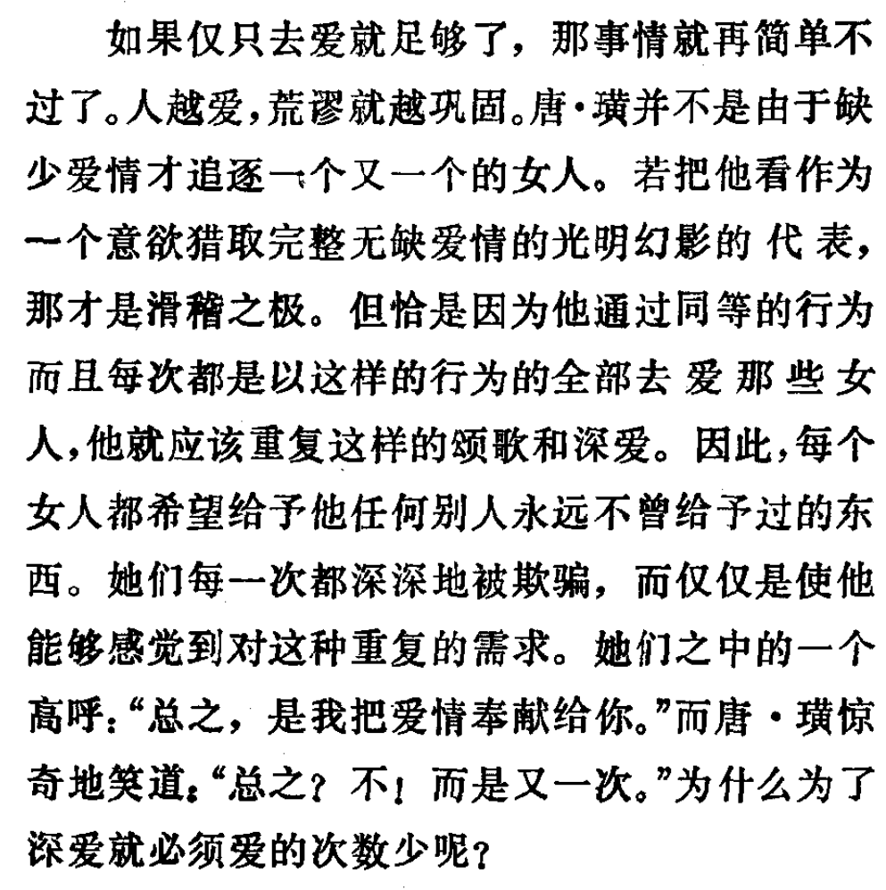

昨天和欧润吉🍊
@YesterdayOrange
如果仅只去爱就足够了，那事情就再简单不过了。人越爱，荒谬就越巩固。唐·璜并不是由于缺少爱情才追逐一个又一个的女人。若把他看作为一个意欲猎取完整无缺爱情的光明幻影的代表，那才是滑稽之极。但恰是因为他通过同等的行为而且每次都是以这样的行为的全部去爱那些女人，他就应该重复这样的颂歌和深爱。因此，每个女人都希望给予他任何别人永远不曾给予过的东西。她们每一次都深深地被欺骗，而仅仅是使他能够感觉到对这种重复的需求。她们之中的一个高呼：“总之，是我把爱情奉献给你。”而唐·璜惊奇地笑道：“总之？不！而是又一次。”为什么为了深爱就必须爱的次数少呢？
